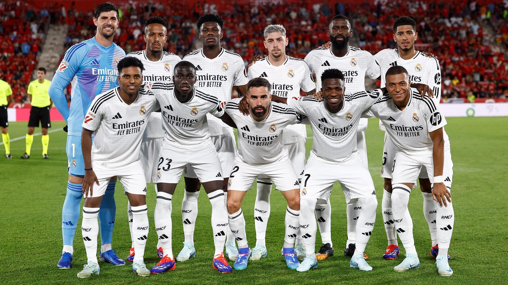
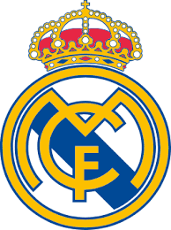

Real Madrid FC

Испанский профессиональный футбольный клуб из города Мадрид. Признан ФИФА лучшим футбольным клубом XX века. «Реал Мадрид» - один из трёх клубов, которые ни разу не покидали высший испанский дивизион, двумя другими являются «Барселона» и «Атлетик Бильбао». Является одним из самых титулованных клубов Испании. На его счету 71 национальный трофей: 36 титулов чемпиона страны, а также 20 Кубков Короля, 13 Суперкубков Испании, 1 Кубок испанской лиги и 1 Кубок Эвы Дуарте. Является рекордсменом по количеству побед и голов в Лиге чемпионов.